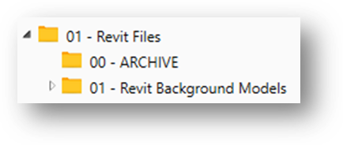
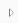
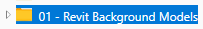

New Features
Current Release
The v2.8.2.2 release contains the following new features:
When copying a Job to create a new one, the Jobs library list now automatically refreshes and selects the newly created job as the current one.
Previous Releases
The v2.8.2.1 release contains the following new features:
None.
The v2.8.2 release contains the following new features:
None.
The v2.8.1 release contains the following new features:
Members module Status/Access assignment and display.
The Status for one or more Account members at a time can be set to activate or inactive. (This feature requires the BIMrx® Cloud Manager logon user have Account Admin access rights.) If a selected member already is already set to the Status currently being set, they will be skipped, and the Status will remain unchanged.
Project Admin Access can be granted (Add) or revoked (Remove) on a per user, per project basis. (This feature requires the BIMrx® Cloud Manager logon user have either Account Admin access rights or Project Admin rights for each project to which the member is being updated.) If set to Ignore then whatever access is currently in place will remain unchanged. The Ignore setting may be useful when performing other changes, such as assignment of Roles or Default Company.
The Project Role Viewer now displays icons representing the Access Level defined for each assignable Role Service–Project Admin and Document Management—Admin, Member and No Access. Previously, it was necessary to look at the pop-up information for each Role to view this information. While this information is still contained there along with all other Role-specific information, the pop-up need not be accessed just to see the Project Admin and Document Management Access Levels.
Project Admin and Document Management are currently the only two Services supported for Member assignment for each selected role. The Access Level for each goes into effect only if it has a higher level than that currently in place for the project Member.
Dynamic display of BIM360® project folders, files, and versions.
Previously, the user was forced to wait for the complete folder/file/version tree to populate when accessing a BIM360® project—whether they wanted to see the full folder detail or not. Now, only the currently selected BIM360® project folder or file details are displayed. This affects the following modules:
- Files
- Jobs
- Browse
Note—Dynamic project display of Jobs is used only when adding a new job. When editing a job, the previous method of building the complete project tree is currently still used.
Each folder that has contents displays the usual tree view indicator, while those that don’t have unexpanded contents, simple don’t have the indicator. In the following diagram, 01 – Revit Background Models contains unexpanded contents, while 00 – ARCHIVE doesn’t.

Note—Each folder can be expanded in one of two ways. You can either click on the small  icon; or alternatively, a somewhat larger target is available by clicking on the entire folder .
This new functionality has also been implemented in the Browse module for Downloads and for Export of project contents descriptions to an MS Excel spreadsheet. These operations now do not require waiting for the complete project display to be displayed on the screen before beginning the download or export to MS Excel process.
On screen log viewer for Browse module.
The log viewer now appears at the bottom of the Browse module and displays log information in the same manner as the other BIMrx® Cloud Manager modules. Also, in the same manner as with the other modules, a button is provided to popup a separate log viewer in a dialog box.
Save & Deploy button added to the Jobs definition screen.
When defining or editing a job, it is no longer necessary to press the Save button, then navigate to the job on the Jobs library list, then press the Add to Scheduled Task button. The new Save & Deploy button provides one button click that performs both functions the same as if the two buttons were pressed, one after the other. All the same validations and choices are performed as when pressing the two buttons separately—except they are now available from the single, dual-purpose button.
[Microdesk Internal Users Only]: Jobs email configuration settings are now provided automatically for Microdesk users.
When a user with a Microdesk product license first runs BIMrx® Cloud Manager and accesses the Jobs module, the system checks to see if there exists a valid email configuration file. If none is found, it then creates one with the pre-defined settings for internal Microdesk users. The user is still free, if desired, to make changes and save them—which will remain in place from that point forward.
The v2.8 release contains the following new features:
Schedule Dynamic Jobs.
BIMrx Cloud Manager® Now supports the ability to schedule Dynamic jobs for exporting of PDFs, NWCs and DWGs.
Display Token Refresh Job Status.
The Token Refresh Job now has unique deployment icons to indicate status—Valid, Warning and Expired. For Valid and Warning status jobs, the amount of time left before its refresh token expires is indicated in the job description.
Reactivate Job Refresh Token.
Token Refresh Job refresh tokens may now be generated on demand without the need to remove and redeploy them. Simply press the Reactivate the Selected Job Refresh Token button at the top of the job library display to reactivate the refresh token.
Note—Complete documentation on the above features are available in the Reactivate Refresh Token Job.pdf file which is included in the BIMrx® Cloud Manager Beta v2.8.0.0.zip file.
The v2.7.3 release introduced the following features:
Export Revit® sheets to PDF via scheduled job.
Introduces Autodesk® Revit® integration to BIMrx® Cloud Manager. This features allows the user to select a Revit® file from a BIM360® project and export the PDF sets to a local folder specified by the user. These PDF sets can be selected individually or as a combined set.
Export Revit® 3D views to NavisWorks NWC files.
This feature allows the user to select a Revit® file from a BIM360® project and export its 3D views to a local folder. When exporting the 3D views, only those matching a filter specified by the user will be downloaded to the folder selected by the user.
Scheduled Jobs now support dynamic filters.
When adding or modifying a scheduled job, the definition of dynamic filters is now supported. These filters may be applied to the project, folder and file name. For example, by defining the first part of a file name as a dynamic download filter as “Proj_”, you are ensured that all new files added to BIM360® that match “Proj_”, will be downloaded. Also, according to the setting selected, specified projects, folders and files can be either included or excluded.
Adds support for Autodesk Login for scheduled jobs.
It is no longer necessary to create a Custom Integration logon for scheduled jobs. Jobs can now be deployed using a standard Autodesk Login. They are refreshed automatically via a separate Refresh Job that is created and deployed automatically by BIMrx® Cloud Manager. This feature includes the ability to switch jobs from a Custom Connection to an Autodesk Connection.
Adds email cc notification to Scheduled Jobs.
A new field has been added to the scheduled job Email Configuration Settings. This optional field contains a cc: email address that will be copied on all Job notifications that are sent.
Download empty folders for both interactive and Scheduled Job downloads.
Downloading empty folders from BIM 360® is now supported. This makes it possible to download an empty file structure to a designated local disc location—making it easy to populate then upload the added files up to BIM 360®.
Supports log-out of Autodesk connection.
There is now a separate Logout from Autodesk® User Connection button on the Connect tab. Pressing this button logs the user out of the current Autodesk® Connection. This permits logging in with a different Autodesk® login as necessary.
Opt-In to MS Insights data collection.
Microdesk® optionally collects data usage information to assist in improving BIMrx® Cloud Manager. This information relates only to product usage statistics (how many times a given button is pressed, etc.) and does include any data belonging to the user. All data collected conforms to the https://www.microdesk.com/privacy-policy/ which is also displayed in the application About box. By default, this data is not collected but may be turned on by the user going into the application About box, selecting Application Insights, and checking Allow Insights.